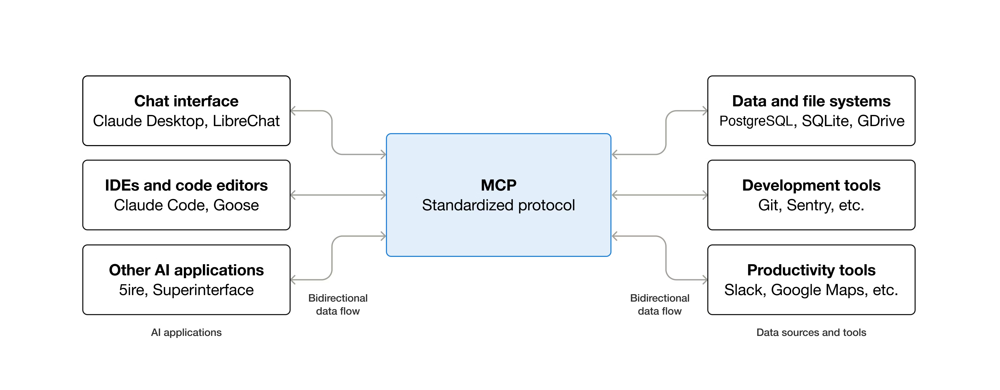
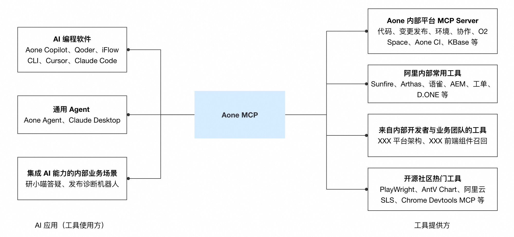

Aone MCP 介绍
MCP 协议简介
What is the Model Context Protocol (MCP)?
MCP (Model Context Protocol) is an open-source standard for connecting AI applications to external systems.
Using MCP, AI applications like Claude or ChatGPT can connect to data sources (e.g. local files, databases), tools (e.g. search engines, calculators) and workflows (e.g. specialized prompts)—enabling them to access key information and perform tasks.
Think of MCP like a USB-C port for AI applications. Just as USB-C provides a standardized way to connect electronic devices, MCP provides a standardized way to connect AI applications to external systems.

Aone MCP 介绍
Aone MCP 是由 Aone 开放技术 团队开发和维护的 MCP 服务。Aone MCP 整合了 Aone 内部研发运维平台能力，提供官方 MCP Server（代码平台、项目协作、变更发布、O2 Space），同时也对集团内部用户提供通用的 MCP 网关与市场服务：
- 对于 MCP 工具用户：提供 MCP 市场和用户鉴权方案，降低 MCP 工具的检索与使用成本
- 对于 MCP 工具开发者：提供 MCP 研发流程与网关转发服务，方便开发者将已有能力封装为 MCP 工具、并发布到 MCP 市场
- 对于 Agent 与 AI 编程工具：支持标准 OAuth 接入，赋能 Agent 集成 Aone MCP 市场生态

使用 MCP Server
Aone MCP 提供标准的 SSE Transport 和 Streamable HTTP Transport 连接地址，用户可以在任意支持 MCP 协议的客户端中进行使用，包括 Cursor、Aone Copilot、Claude Code 等。
开发 MCP Server
Aone MCP 提供了非常丰富的接入方式，包括 HTTP、HSF、命令行托管、已有 Server 代理等多种方式。
开发者可以根据业务场景，选取合适方式对接 Aone MCP 网关与市场。
- 文档地址 MCP Server 开发概览
Agent 接入
Agent 开发者可以通过标准的 OAuth 流程来接入 Aone MCP 生态，为 Agent 的用户提供丰富的 MCP 能力。
详见 MCP 身份认证概览